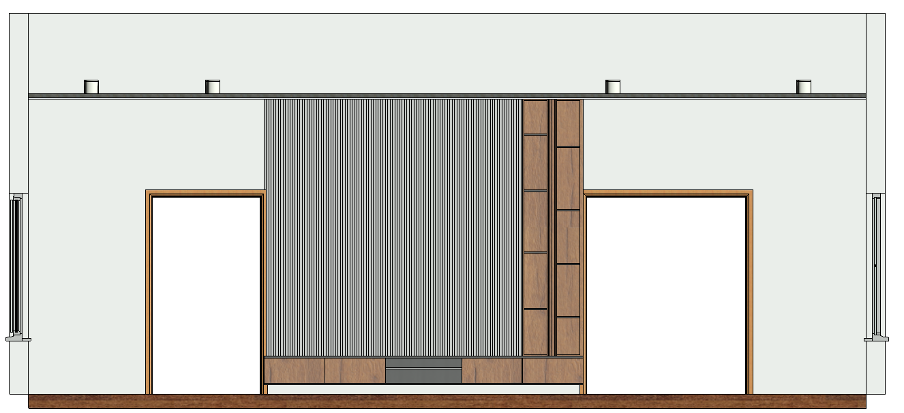

Selected work / Interior design
A living space with a clear point of view.
A residential living and dining concept in Ikeja, Lagos, developed from client preferences into space planning, material direction, joinery design, and photorealistic visualisation.

The brief
Translate a preference into a place.
The design process began with the client’s preferred colour palette, materials, and aesthetic direction. The space was then planned around living and dining functions, refined through feedback, and communicated through realistic rendered views.
Space planning, material selection, furniture arrangement, and feature-wall development.
Fluted panels, display niche, and floating console integrated into the TV wall.
Visual communication
Help the client see the decision.
The final visualizations make the proposed atmosphere, proportions, materials, and joinery legible before implementation — giving the client a concrete basis for review and refinement.
Open interior portfolio ↗Discuss an interior project ↗Selected views
From atmosphere to detail.

